Worship 팁 & 핵심 보너스
다음 일반 Worship 팁들은 모든 토템 도전에 적용됩니다.
- 건설 타워 (Construction Towers): 타워 디펜스 배치도 중요하지만, 최대 웨이브는 Construction에서 올린 마법사 타워 레벨에 크게 좌우됩니다. 초반에는 Boulder Roller가 Poisonic Elder 해금 전까지 최고의 공격 타워입니다. 그러나 Frozone Malon, Stormcaller, Party Starter, Krakan Cosplayer, Voidinator도 중요한 유틸리티를 제공하므로 완전히 방치하지 마세요.
- Hunter 최적 클래스: Hunter는 Stop Right There로 적을 잠시 멈출 수 있고, Kung Fu Kick으로 밀어낼 수 있어 Worship 미니게임에 가장 적합한 클래스입니다.
- Slow Roast Wiz (World 3 Equinox): 이 업그레이드는 마법사 타워 데미지량을 시간에 따라 증가시켜 최고 웨이브 달성에 필수적입니다. 이를 위해 보스 웨이브에 도달하기 전 모든 웨이브를 스팸하여 누적을 시작하는 것이 중요합니다. 가능하면 Equinox에서 최소 1레벨을 해금해 타워 디펜스 진행을 돕고, 이후 다른 Equinox 우선순위에 따라 추가 투자를 결정하세요.
- Cannoli (World 4 Cooking): 종종 간과되는 타워 디펜스 밥 업그레이드로, Tower Defence에서 획득하는 포인트를 늘려 최고 웨이브 공략에 필요한 추가 타워와 업그레이드를 확보하게 해줍니다.
- 일반 타워 디펜스 전략: 초반 웨이브는 데미지량만으로도 처리 가능하지만, 후반 웨이브는 Hunter 탤런트, Kraken Cosplayer, Frozone Malone 타워로 적을 막는 것이 핵심입니다. 모든 Worship 도전에서 초반에는 공격 타워에 집중하다가 적 수가 토템 체력을 위협하면 Kraken/Frozone 유틸리티를 추가하세요. 이후에는 자신의 계정 강화 상태와 타워 레벨에 맞는 데미지량/유틸리티 균형을 찾으세요. Slow Roast Wiz가 해금되어 있고 Kraken/Frozone 지연 타워가 구축되어 있다면, 항상 보스 웨이브에 도달하기 위해 다음 웨이브를 스팸 클릭하세요.
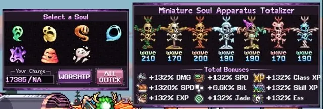
Worship 전략 & 타워 업그레이드 (전 월드)
각 Worship 토템마다 레이아웃과 몬스터 웨이브가 약간 다르지만, 전 월드의 전략은 아래 조합을 기반으로 합니다. 이 전반적인 전략을 숙지하면 마법사 타워 레벨에 따라 자신의 계정 진행 상황에 맞게 조정할 수 있습니다.
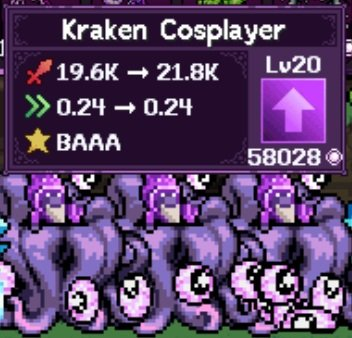
- 스폰 포탈 근처에 Voidinator를 배치해 적의 색상 효과를 비활성화합니다. 초록(회복), 파랑(은신), 주황(타워 기절) 등 까다로운 색상을 무력화하는 데 특히 중요합니다. 빠른 쿨다운이 필요 없으므로 Voidinator 업그레이드는 옵션 B(추가 데미지량)에 집중하세요.
- Kraken Cosplayer(해금 시)와 Frozone Malone 유틸리티를 조합해 적을 억제합니다. Kraken은 B 업그레이드 1회로 적을 더 멀리 밀어내고, 이후 A 업그레이드를 쌓아 더 많은 적을 억제하세요. Frozone은 A 업그레이드로 냉동 효과를 강화하고, 적이 영구 동결 상태가 되므로 B 업그레이드(냉동 지속 시간)는 가치가 낮습니다.
- Kraken 타워에 억제된 적을 공격할 수 있는 위치에 Poisonic Elder를 추가합니다. A 업그레이드를 최소 2회 적용해 독구름 지속 시간을 2배로 늘린 후 B 업그레이드로 효율을 극대화하세요. Poisonic Elder 해금 전에는 A 업그레이드가 적용된 Pulse Mage나 B 업그레이드가 적용된 Boulder Roller를 사용하세요.
- Party Starter와 Stormcaller로 추가 데미지량과 유틸리티를 더합니다. Party Starter는 A 업그레이드로 속도를 높여 Kraken이 더 빠르게 적을 밀어내고 공격 타워 공격 속도도 증가시킵니다. Kraken 속도가 0.30에 도달할 때까지 속도를 높이세요 (Kraken을 클릭해 확인 가능). Stormcaller는 모든 타워에서 B 업그레이드를 5회 적용해 타워 치명타 100%에 도달한 후 A 업그레이드로 전환하세요.
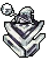
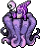
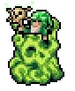
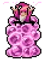
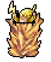
| 타워 | 권장 업그레이드 |
|---|---|
| Voidinator | 전부 B |
| Kraken Cosplayer | B 1회 후 전부 A (타워마다 반복) |
| Frozone Malone | 전부 A |
| Poisonic Elder | A 2회 후 전부 B (타워마다 반복) |
| Party Starter | Kraken 속도 ~0.30 될 때까지 전부 A, 이후 전부 B |
| Stormcaller | 모든 Stormcaller에 B 5회 분산 후 전부 A |
| Pulse Mage | 전부 A (Boulder Roller 전에만 사용) |
| Boulder Roller | 전부 B (Poisonic Elder 전에만 사용) |
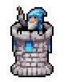
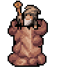
월드별 Tower Defence 공략
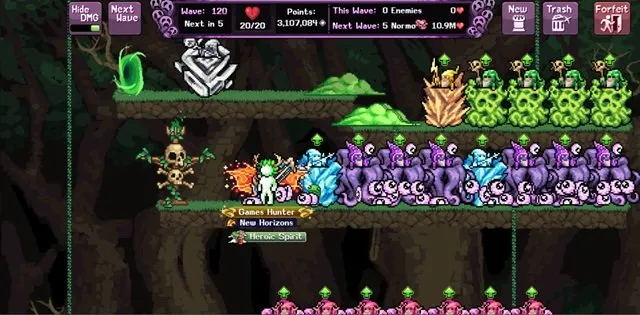
Goblin Gorefest (World 1 – Forest Outskirts)
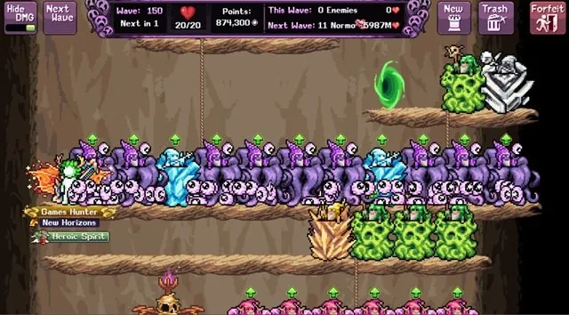
초보자는 처음에 A 업그레이드(multihit 확률)를 적용한 Pulse Mage를 사용하고, 해금되면 A 업그레이드(냉동 효과 강화)가 적용된 Frozone Malone을 추가하세요. Fireball Lobber도 타워 디펜스 영역이 작아 비교적 효과적이지만, Construction에서 Poisonic Elder를 해금할 때까지 Boulder Roller 레벨업에 집중하세요. 토템 체력을 지키기 위해 데미지량과 유틸리티를 균형 있게 추가하고, 타워 레벨이 오를수록 앞서 설명한 표준 배치를 목표로 하세요.
Acorn Assault (World 1 – The Roots)
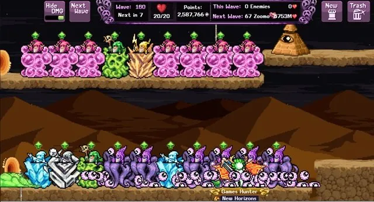
최대 웨이브가 다른 도전보다 뒤처지기 쉬운 어려운 World 1 타워 디펜스로, 높은 체력의 회복 보스에 특화되어 있어 Stormcaller와 Voidinator가 핵심입니다. Voidinator 해금 전에는 선택지가 제한적이지만 Boulder/Frozone 조합이 최선입니다.
Wakawaka War (World 2 – Up Up Down Down)
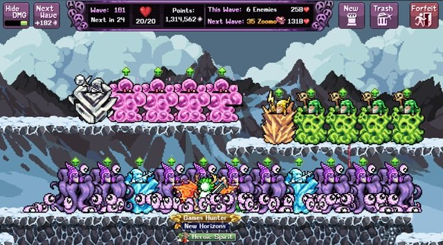
투명 적에 초점을 맞춘 타워 디펜스로, 고 웨이브에도 Voidinator에 의존합니다. 해금 전에는 공격 타워를 분산 배치해 항상 사정거리 안에 있는 적이 있도록 하는 것이 도움이 됩니다. 다른 타워 디펜스와 마찬가지로 Voidinator 없이는 고 웨이브 달성이 어렵지만, 초기 도전에는 분산 배치한 Boulder/Frozone이 최적입니다.
Frosty Firefight (World 3 – Rollin' Tundra)
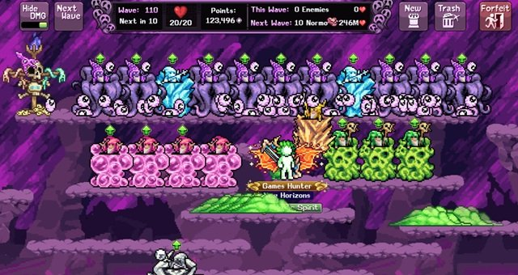
수많은 소형 적들이 방어선을 돌파하려 하며 기절기와 연계되는 어려운 타워 디펜스입니다. 초반에 Kraken을 많이 배치하는 것이 중요하며, Kraken 해금 전에는 분산 배치한 Frozone이 최선입니다.
Clash of Cans (World 4 – Mountainous Deugh)
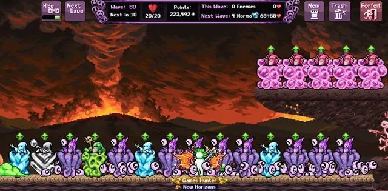
독특한 플랫폼 구조로 타워 배치가 처음에는 어렵습니다. 빠르게 움직이며 타워를 기절시키는 적에 초점을 맞추고 있어 Voidinator 없이는 진행이 어렵지만, Wakawaka War처럼 타워 분산 배치가 Voidinator 전 최선의 전략입니다.
Citric Conflict (World 5 – OJ Bay)
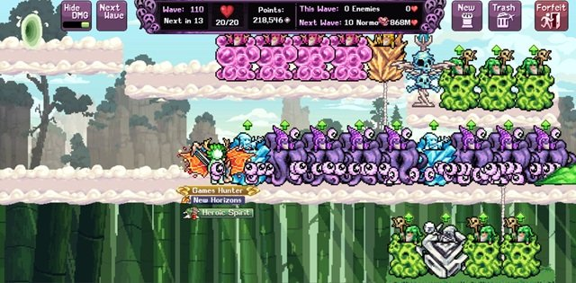
완전히 평탄한 맵이지만 배치할 수 있는 타워 수에 제한이 있습니다. Voidinator가 여전히 전략의 핵심이지만, 적을 놓치지 않도록 포탈에서 약간 떨어뜨려 배치해야 합니다. 이 타워 디펜스는 타워 수 제한으로 인해 Construction과 Equinox의 데미지량 강화가 핵심입니다.
Breezy Battle (World 6 – Above The Clouds)
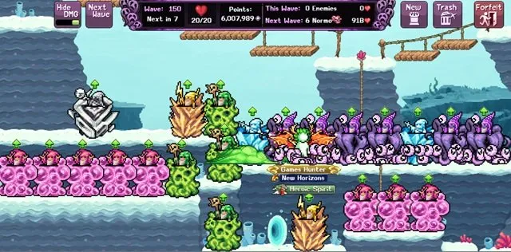
대부분 평탄한 타워 디펜스로, 적 흐름을 막기 위해 많은 Kraken이 필요합니다. 이 시점에는 Construction에서 모든 타워가 해금되어 있어야 하므로 표준 전략을 따르세요. Voidinator에 닿지 않고 지나가는 적이 없도록 주의하고, Hunter Stop Right There 탤런트를 신중하게 사용하며 Party Starter 속도를 초반에 집중하세요.
Pufferblob Brawl (World 7 – Puffpuff Overpass)
World 7 타워 디펜스는 Pufferblob 맵의 어색한 레이아웃을 가지고 있어, Construction에서 높은 레벨의 Party Starter가 있으면 추가 레벨로 타워 사정거리가 넓어져 도움이 됩니다. 표준 타워 디펜스 전략을 따르면서, 뒷 플랫폼에 지연 전술을 구축해 적들이 그 플랫폼 시작 부분에 집결하도록 유도하세요. 아래 플랫폼으로는 다시 밀려나지 않기 때문입니다. 데미지량 출력이 부족하다면 적 체력이 낮을 때 높은 데미지량을 위해 A 옵션으로 업그레이드한 추가 Stormcaller 사용을 고려하세요.